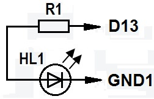
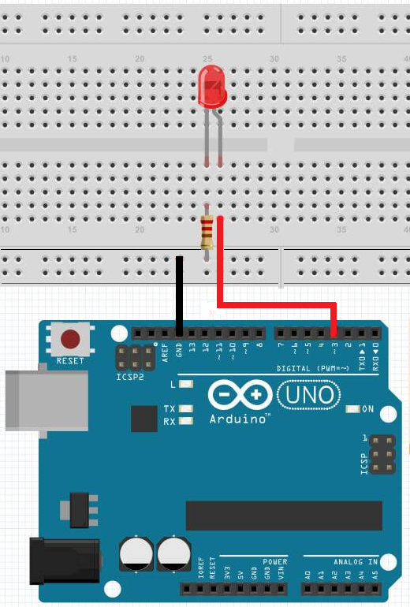

Мигающий светодиод на Arduino
Детали:
- Микроконтроллер Arduino UNO.
- Макетная плата.
- Светодиод.
- Резистор сопротивлением 200-300 Ом.
- USB-кабель.
- Соединительные провода.
Схема электрических соединений показана на рисунке 1.

Резистор ограничивает ток, который проходит через светодиод. Каждый светодиод рассчитан на определённый ток, и если этот ток будет больше, то светодиод выйдет из строя.
Большинство светодиодов 3 мм или 5 мм имеют рабочее напряжение около 2 В. Значит, на резисторе нам надо погасить
5 - 2 = 3 [B].
Затем мы вычислим ток, проходящий через резистор. Большинство 3 и 5 мм светодиодов светятся полной яркостью при токе 20 мА. Ток больше этого может вывести их из строя, а ток меньшей силы снизит их яркость, не причинив никакого вреда.
Таблица 1
| Цвет излучения | Рабочее напряжение, В |
|---|---|
| Красный | 1,8 |
| Зеленый | 2,2 |
| Желтый | 2,1 |
| Синий | 3,2 |
| Белый | 3,2 |
Пример. Необходимо включить светодиод в цепь 5 В,чтобы на нем был ток 20 мА (0,02 А). Так как все детали включены в одну цепь на резистор тоже будет ток 20 мА.
Мы получаем:
R = U/I = 3 / 0,02 = 150 [Ом]
150 Ом - это минимальное сопротивление, лучше использовать немного больше, потому, что светодиоды имеют некоторый разброс характеристик. Обычно используется резистор 200-300 Ом.
Порядок работы
1. Cоединяем элементы как показано на рисунке 2.

2. В среде Arduino IDE вводим скетч.
Скетч
pinMode(3, OUTPUT); // порт 3 в режиме вывода
}
void loop(){
digitalWrite(3, HIGH); // в порт 13 записываем логическую 1
delay(1000); //длительность свечения светодиода
digitalWrite(3, LOW); // в порт 13 записываем логический 0
delay(1000); // длительность гашения светодиода
}
3. Загружаем скетч в Arduino. Если все правильно, светодиод должен мигать. Частоту мигания можно изменять изменяя значение параметра процедуры delay.
Источники
usamodelkina.ru - Мигающий светодиод (Arduino)
arduinomaster.ru - Мигание светодиодом на Ардуино. Мигалка и маячок